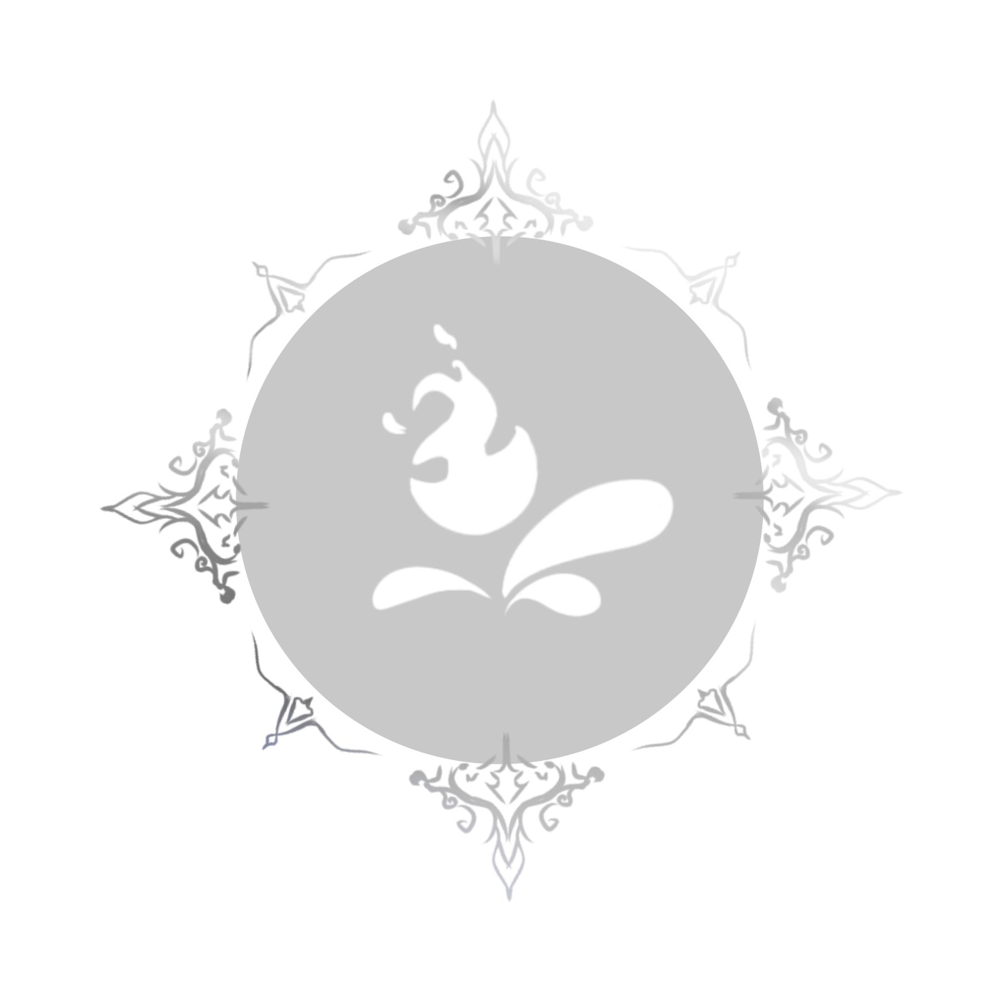
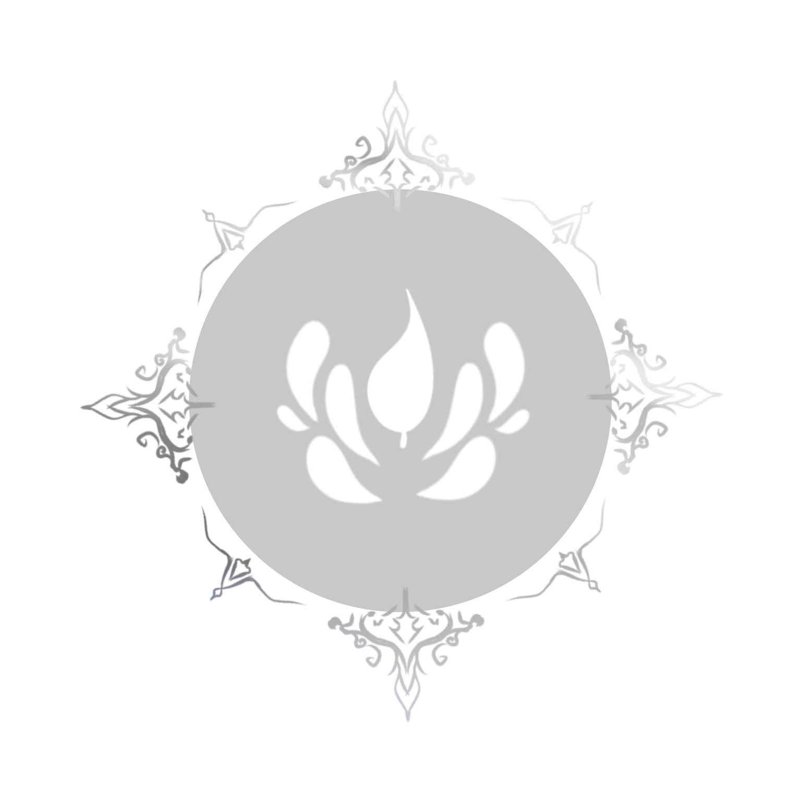
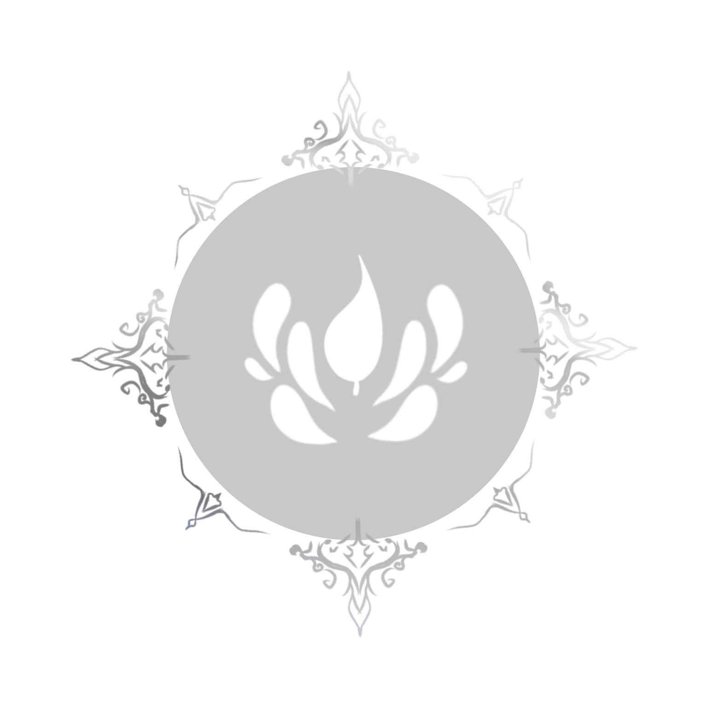
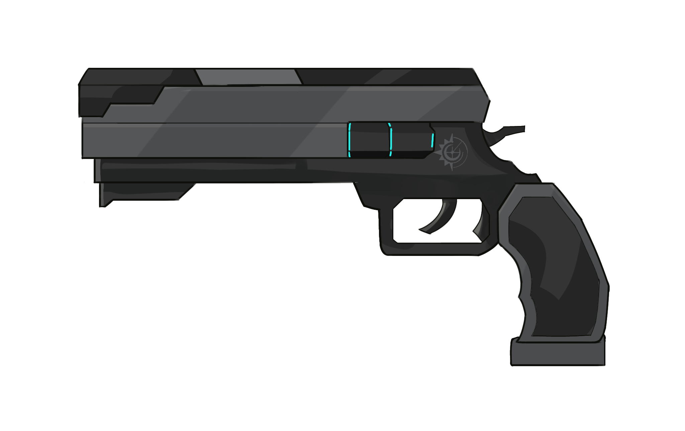
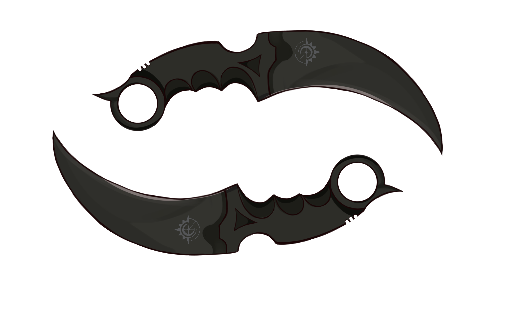

System
[sistem roleplay]
1. Cara melakukan roleplay Ada banyak cara tergantung preferensi author masing-masing. •[Nama OC]: [DIALOG] *Tindakan* •[Berbentuk narasi] "[Dialog tokoh]" [Narasi] •[Nama OC]: [DIALOG] //Tindakan
2. Pemilihan tindakan yang akan dilakukan tokoh.
Dalam narasi yang diberikan oleh admin, akan disediakan beberapa pilihan yang harus dipilih oleh anda. Pilihan tersebut yang nantinya akan menentukan cerita dan ending yang akan kalian dapat.
3. [AFFECTION]
Setiap pilihan yang kalian pilih akan menghasilkan tindakan tertentu. Poin affection akan terkumpul jika kalian memilih satu opsi yang di dalamnya terdapat poin affection . (Opsi tidak dapat diketahui apakah berisikan poin affection atau tidak.)
4. [ITEM DAN SIDE QUEST]
Poin affection yang terkumpul akan berubah menjadi sebuah item ataupun side quest yang nantinya akan membantu kalian menyelesaikan commision kalian. (Item dan side quest akan diberikan oleh lawan bicara kalian.)
5. TIME LIMIT
Dalam menyelesaikan commision, kalian akan diberikan sejumlah waktu untuk melakukannya. Waktu inilah yang akan kalian gunakan untuk memilih opsi tindakan di dalam narasi yang diberikan.
Contoh:
Kalian memiliki waktu 20 menit sebelum sampai ke kereta, namun seorang pria datang menghampiri kalian dan meminta untuk menjaga kopinya sementara Ia pergi ke toilet. Tindakan yang akan kalian lakukan adalah:
•opsi satu [menghabiskan 10 menit]
//Menjaga kopinya
•opsi dua [menghabiskan 0 menit]
//Menolaknya dengan alasan terburu-buru
•opsi tiga [menghabiskan waktu 3 menit]
//Mencarikan orang lain untuk membantunya
[BATTLE SYSTEM]
Seluruh divisi telah bekerja sama untuk meneliti para "Mutant" selama bertahun-tahun dan akhirnya, kerja sama tersebut membuahkan hasil dengan divisi science yang menemukan keunikan para Mutant.
Salah satu keunikan mereka yaitu, setiap mutant memiliki beberapa elemen yang berbeda. Elemen tersebut terbagi menjadi 4 macam, water element, fire element, electrical dan yang terakhir adalah nature.
Water>fire>nature>water
Nature>Electrical>water 
 

Penelitian juga berhasil mengembangkan senjata berisikan tiga elemen yang dapat mengalahkan mereka. Di dalam senjata terdapat unsur elemen yang berbeda-beda dan dapat diisi ulang kembali.
Dari semua hasil penelitian ini, masing-masing karyawan Deluxe company diwajibkan memilih salah satu tipe senjata yang sudah disediakan.  